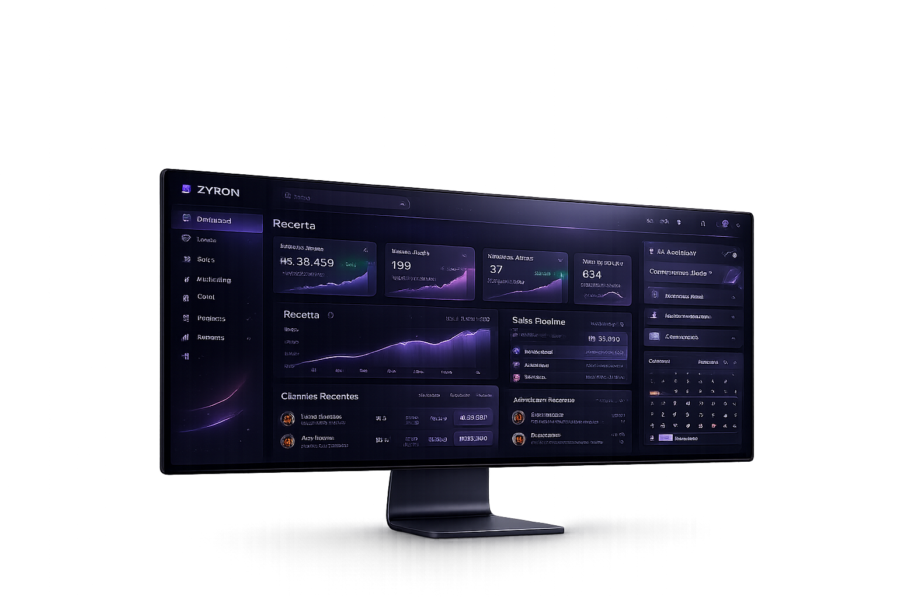
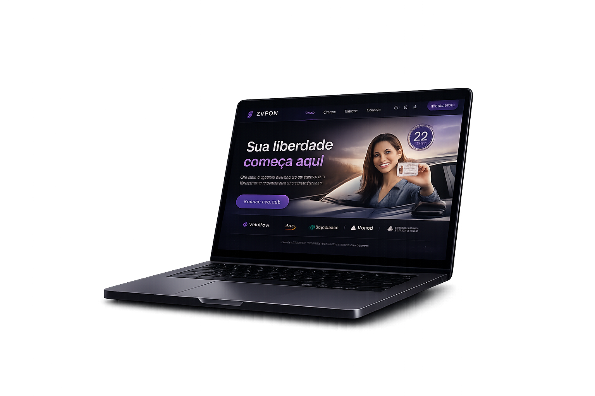
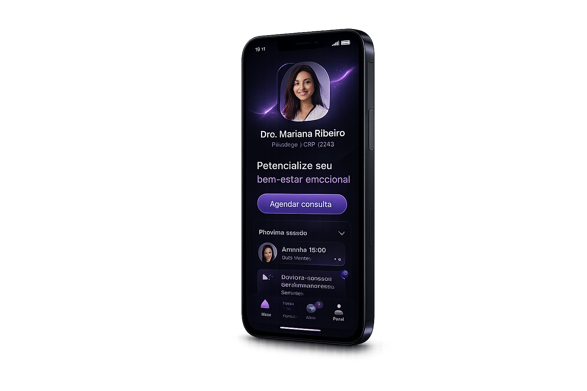
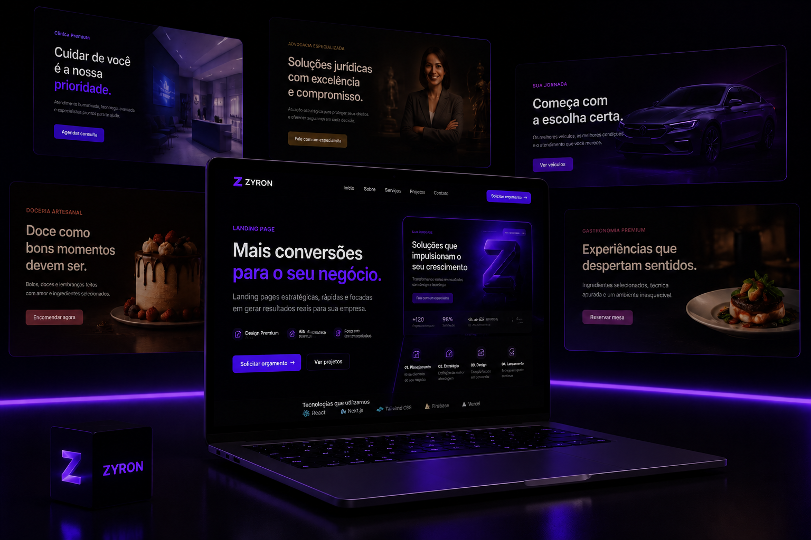
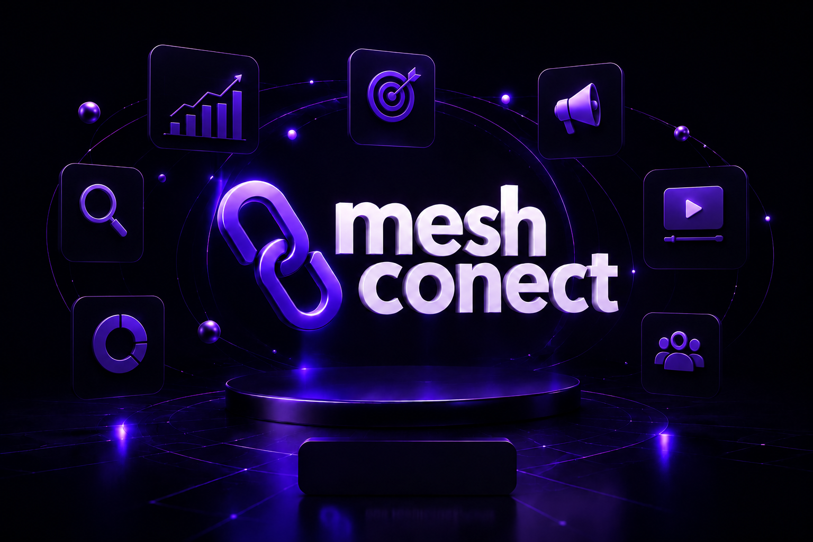
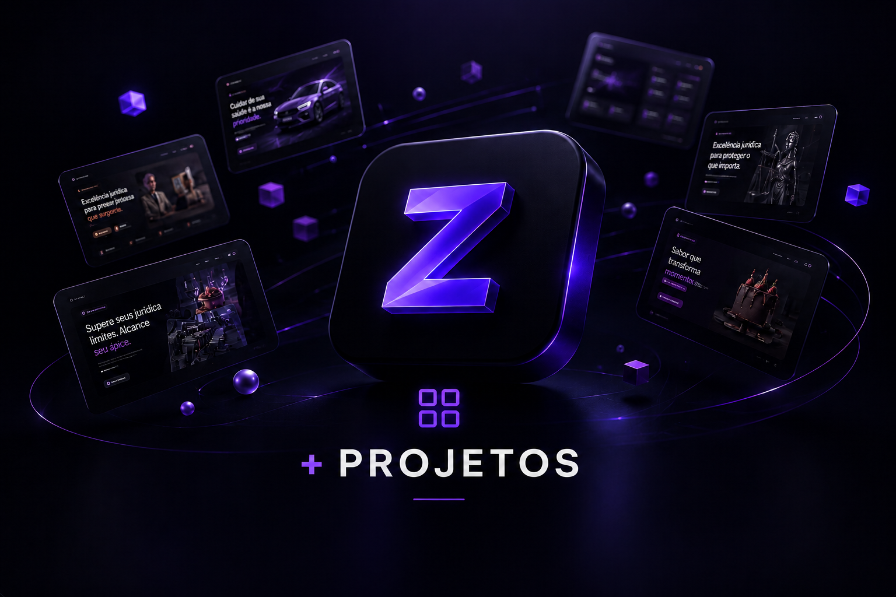

Desenvolvimento moderno
Criamos sites, landing pages e sistemas rápidos, modernos e preparados para evoluir com o seu negócio.
Criamos sites, Landing Pages, sistemas e soluções de marketing digital para empresas que desejam fortalecer sua presença online, atrair clientes e crescer com tecnologia, estratégia e performance.



Na ZYRON, unimos estratégia, design e tecnologia para criar sites, sistemas e experiências digitais que fortalecem marcas, aumentam a credibilidade e ajudam empresas a conquistar mais clientes.
Criamos sites, landing pages e sistemas rápidos, modernos e preparados para evoluir com o seu negócio.
Interfaces bonitas, intuitivas e focadas na melhor experiência do usuário.
Em parceria com a Mesh Conect, unimos desenvolvimento e marketing digital para criar soluções que geram resultados reais.
A ZYRON desenvolve soluções digitais modernas para empresas que desejam fortalecer sua presença online, transmitir credibilidade e crescer através da tecnologia.
Sites modernos, rápidos e responsivos, desenvolvidos para fortalecer sua presença digital e gerar mais oportunidades para o seu negócio.
Soluções sob medida para automatizar processos, organizar informações e aumentar a eficiência da sua empresa.
Aplicativos intuitivos para Android e iOS, desenvolvidos para oferecer praticidade, desempenho e uma excelente experiência ao usuário.
Páginas de alta conversão criadas para campanhas, lançamentos e captação de clientes, com foco em resultados.
Automatize tarefas e conecte sistemas, APIs, WhatsApp, CRMs e outras ferramentas para otimizar seus processos.
Em parceria com a Mesh Conect. Estratégias de marketing, gestão de tráfego, redes sociais e branding para aumentar sua visibilidade e acelerar o crescimento da sua empresa.
Criamos experiências digitais completas, unindo tecnologia, design e estratégias de marketing para gerar resultados reais.
Sites rápidos, leves e otimizados para oferecer a melhor experiência e aumentar suas chances de conversão.
Utilizamos tecnologias modernas e estratégias atualizadas para criar soluções preparadas para o futuro.
Cada projeto nasce com um objetivo claro: fortalecer sua marca, atrair clientes e gerar resultados reais.
ZYRON e Mesh Conect unem desenvolvimento e marketing digital para entregar uma solução completa, do projeto ao crescimento da sua empresa.
Conheça alguns dos nossos projetos em desenvolvimento web, Landing Pages e soluções de marketing digital, criados para fortalecer marcas, atrair clientes e gerar resultados.

Conheça Landing Pages desenvolvidas para diferentes segmentos de mercado.

Conheça como a Mesh Conect ajuda empresas a crescer através do marketing digital.

Explore todos os projetos, soluções e serviços desenvolvidos pela ZYRON.
Transforme sua ideia em um site, sistema ou landing page que gera resultados e acompanha o crescimento do seu negócio.
Iniciar projeto